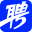
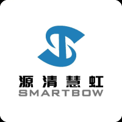

你好，我是邵梦贞
一名拥有 7 年经验的产品体验设计师，设计经历涵盖企业级数据平台、低代码工具与 AI 智能体产品。
其中 3 年数据中台设计经历让我积累了复杂 B 端产品经验，擅长梳理业务逻辑，将抽象需求转化为清晰、易理解、可操作的产品体验，并通过用户研究与可用性测试验证方案。我注重跨团队协作，能够以设计推动共识与落地，也曾通过体验优化促进多个商业化产品的转化。
如今我更加关注 AI 带来的交互范式与工作方式变化，并通过 Vibe Coding 快速构建原型、验证想法，持续探索设计创造用户与业务价值的新路径。
工作经历
2025–至今
字节跳动–Lark Design–产品设计师（AI方向）
深度参与 Aily 智能体开发平台与 aPaaS 平台的体验建设与 AI 业务探索，负责重点项目：
Ailo（AI 驱动的工作流搭建平台）：从0-1构建产品框架，完成从工作流生成-配置-调试-发布全流程设计
Aily 自定义智能体： 围绕企业数字员工的产品定位，主导产品框架优化，由传统后台式配置优化为集中的档案编辑式体验；通过 vibe coding 还原设计页面，基于实际页面开展用户可用性测试，为方案提供了优化思路
Aily 团队智能体：负责工作上下文能力建设，团队工作伙伴Profile页框架升级，信息架构探索及设计落地
2022–2025
字节跳动–火山引擎–产品设计师（B端）
聚焦B端数据平台产品的系统化设计，先后负责重点业务：
Gaia门户及低代码搭建平台：主导Gaia门户端从0-1的重构，包括页面框架、搭建逻辑、组件交互等；参与Lowcode平台编辑器产品重构、从0-1搭建接口编排能力，并成功申请发明专利。
Pontus数据治理平台：主导Pontus 2.0治理动线建设与优化的设计工作，构建清晰易用治理体验路径，提升NPS与满意度。主导全站无死角走查，并制定业务侧一致性规范，提升平台专业感与一致性。
Manta数据质量平台：负责Manta2.0重构项目，主导客户UAT测试验证改版方案效果。
需求理解Agent：负责从0-1的设计方案，结合产品与业务诉求及用户目标，打磨产品设计保障用户体验
2020–2022

智联招聘–交互设计师（B偏C–HR端）
负责B端HR使用的招聘系统的交互设计工作。曾负责促回复率、商业化产品、拉新与注册流程的交互链路梳理与优化等工作，关注产品体验与用户增长方法论。
2019–2020

源清慧虹–交互设计师（纯B端）
负责B端物联网监测系统的交互设计工作，优化产研设协作流程，沉淀组件库。
教育经历
2015–2019
郑州大学–工业设计专业（211本科）
系统学习设计理论、人机工程学、数字媒体艺术等课程；
在校期间连续三年获得校级奖学金，海尔COSMOPlat用户体验设计大赛十佳小组。